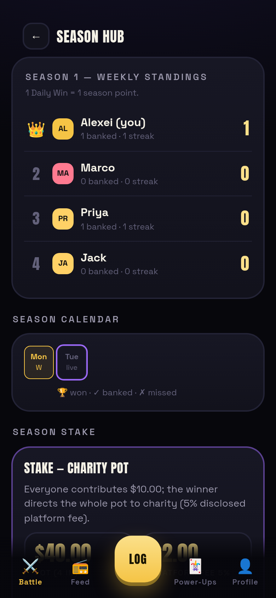
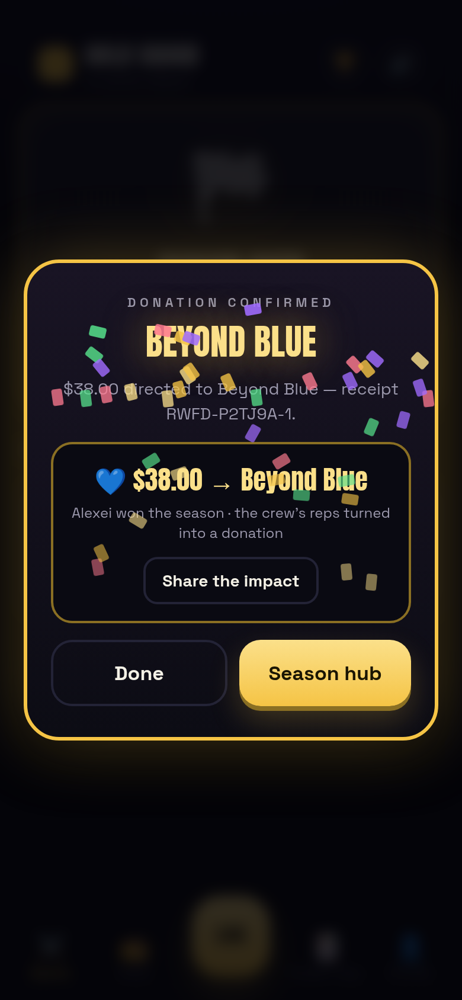
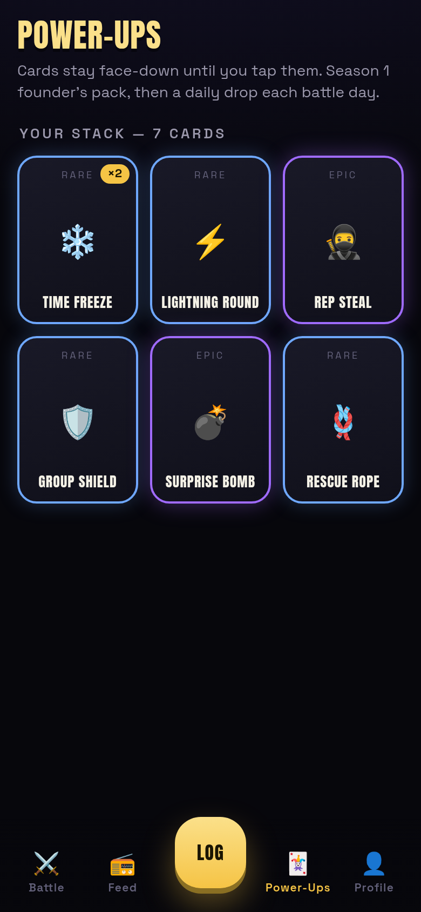
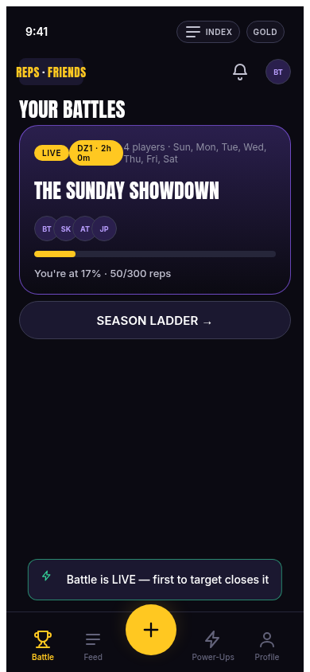
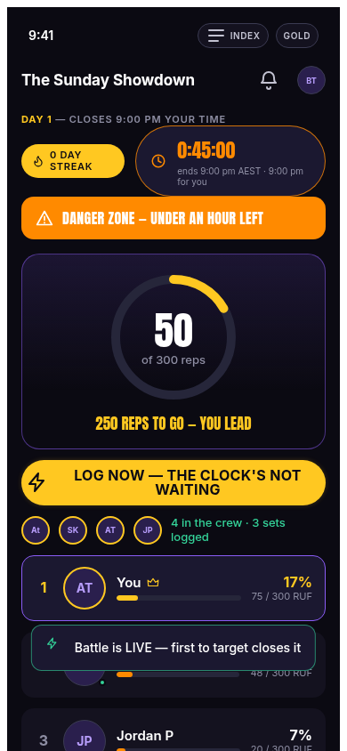
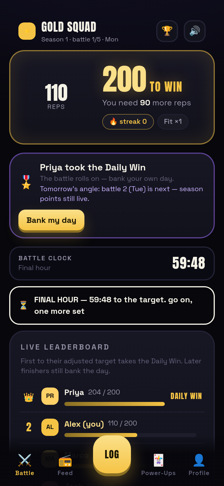
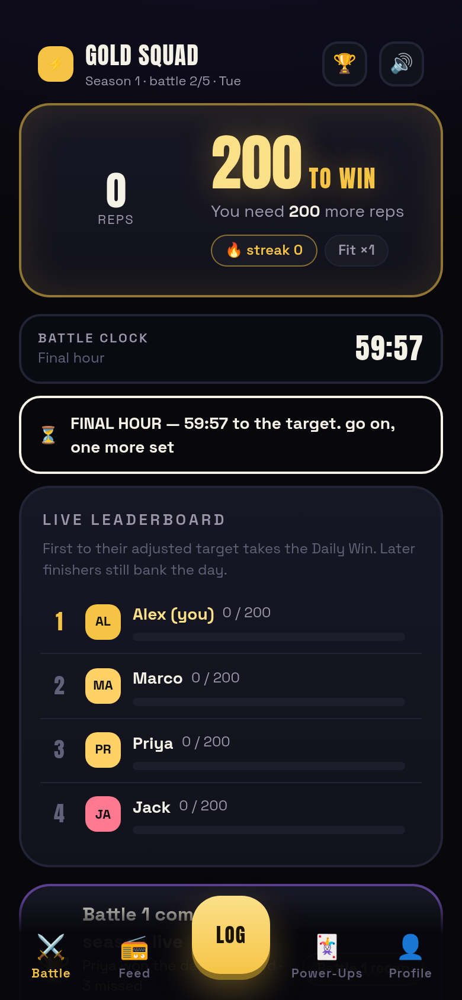

Chapter 1 · the game
Game Rules — the daily model
Since 2 Sep 2026 the product spec is Ben's master Source of Truth (36pp, v2026-09-02) and the rules live in Engine V4 — packages/game-core (spec, 110 tests) ported to the app as apps/sot-engine.js, driven by apps/sot/engine.js. One line: a group plays on agreed battle days; everyone races to their adjusted target — first eligible player there takes the Daily Win; everyone who finishes after still banks the day; Daily Wins stack into a weekly season; stakes settle when the season ends. Numbers below are read straight from the code.
The 300-rep match era this supersedes is preserved at the bottom of this page and on The four versions.
The daily battle — 200 adjusted reps
live (v4)On an active day every eligible player gets a personally adjusted target — 200 by default — and races. The first eligible player to reach their target earns the Daily Win. The battle does not end there: it rolls on until the day's clock closes, and everyone who reaches their own target afterwards still banks the day.

How it works. Each logged set is converted to effort-adjusted reps before it hits the engine:
progress = Σ entries + credits (rescue rope) + bonuses (steal · bomb defusal)
Daily Win = first player with progress ≥ their adjusted target
Bank-day continuation is the core SOT correction over the old model: a finished battle is not a dead battle. Later completers preserve their streak, earn participation credit, feed team totals and keep the feed alive — the SOT's words: "the battle does not become meaningless after somebody wins."
Worked example (from the v4 e2e): target 200. Marco (casual ×1.25) logs 48 push-ups → 60 reps. I steal 10% of Priya's completed 100 → +10 to me, Priya keeps 100 (pure gain). My plank hold of 11s → 1 rep. Then 195 push-ups → 206 ≥ 200: Daily Win, battle stays open, Priya finishes her 200 and banks the day (streak 1), Jack misses at the deadline — failed day, streak resets.
Failed days: at the clock's close, any eligible player under target fails the day — streak resets to zero, failed-day counter increments, the recap says so plainly. An armed Group Shield converts a failed day into a streak-preserved one (consumed at the close it saves).
createDay / logSet / targetProgressOf / effectiveTargetOf / closeDay · game-core ENGINE V4proven by: game-core 110 tests · apps/sot e2e 120 checks — win/bank/fail all asserted in state
Handicap tiers — what a rep is worth
liveFitness tiers multiply every rep toward your target: the couch player's push-up counts more than the athlete's. The objective is similar competitive effort, not equal physical output. The exact formula beyond the tier multiplier is an open SOT question (Q217–221).

| Tier | Multiplier | 100 physical push-ups score | Target 200 needs |
|---|---|---|---|
| Couch | ×1.5 | 150 | 134 push-ups |
| Casual | ×1.25 | 125 | 160 push-ups |
| Fit | ×1.0 | 100 | 200 push-ups |
| Athlete | ×0.85 | 85 | 236 push-ups |
Exercises convert too (a working proposal — the official table is an open SOT gap): burpee ×2.0, push-up/squat/lunge/dip ×1.0, mountain climbers/jump rope ×0.5, and timed holds at 10 seconds = 1 rep (plank, wall sit).
The measured-heart-rate blend from the earlier engine (70% %HRR / 30% declared tier) remains in game-core, waiting on straps — see Verification.
TIER_MULTIPLIERS / tierMultiplier · conversion table in apps/sot/engine.js EXERCISESproven by: tier cases in the game-core suite · the v4 e2e asserts handicap-adjusted gains (48 → 60)
Streaks, rest days & the shield save
live (v4)Streaks count consecutive banked battle days. Rest days never break them. A failed day resets the streak — unless the Group Shield is armed.

- Banked day — reached your target after the winner: streak +1, participation credit, history dot ✓.
- Failed day — under target at the close: streak → 0, ✗ in the history, comeback framing never shame (founder directive).
- Rest day — no battle scheduled today: the home screen says the streak is safe and names the next battle day (SOT #29/#101).
- Shield save — an armed Group Shield converts every failure at that day's close into streakPreserved, then the shield is consumed.
Streak truth lives in the engine's season record (recordBattleDay → battleStandings) — the live UI's optimistic counts reconcile there at every close, so a mid-day crash can't corrupt a streak.
closeDay outcomes / recordBattleDay / battleStandingsproven by: v4 e2e — Priya banks day 2 (streak 2), Jack/Marco fail day 1 (streak 0), shield-save unit tests in game-core
Weekly seasons · 1:1 points · stakes at season level
live (v4)Seasons default to weekly (one pass of the group's battle days; monthly optional, Major seasons future). 1 Daily Win = 1 season point. Nothing financial or material settles on an individual day — the season ends, then the agreed stake resolves.


| Stake | Resolves as | In the build |
|---|---|---|
| 🍽 Dinner | Loser buys the agreed meal (spend cap) | agreement-gated at join, obligation + mark-fulfilled at season end |
| 😈 Dare | Forfeit locked before the season | declaration frozen at creation — can't be edited mid-season |
| 🧹 Deliverable | Practical favour owed by the loser | same obligation lifecycle |
| ❤️ Charity pot | Everyone contributes; winner directs the pot; disclosed platform fee | full lifecycle: contribute → pot maths → winner chooses charity → donation + receipt |
Charity mechanics exactly: each player's contribution agrees up-front (points are the trial currency — the demo displays 1 point as $1); at season end the pot totals, the platform fee (5% default, always disclosed) is deducted on screen, the winner picks from the eligible list, and the donation lands with a receipt code. The winner never receives cash — stakes without gambling. Cash wagering is explicitly deferred by the SOT (licensing/KYC/geo — not V1).
createBattleSeason / recordBattleDay / endBattleSeason / proposeStake / agreeToStake / contributeToCharityStake / resolveSeasonStake / designateCharity / processCharityDonationproven by: season + stake suites in game-core · the v4 e2e walks a full 2-battle week to charity resolution ($38.00 of $40.00 after the $2.00 fee)
Power-ups — the SOT canon (corrected steal & shield)
live (v4)Four launch cards per the SOT — Lightning, Rep Steal, Group Shield, Time Freeze — plus the post-launch set. Two semantics were corrected from our earlier build: Rep Steal is a pure gain (the target keeps every rep), and Group Shield protects streaks (it does not block steals).

| Card | Effect (exact, from the engine) | Guard rails |
|---|---|---|
| ⚡ Lightning Round | Your reps count ×3 for 10 minutes | once per player per day; window expires, the once-flag never resets |
| 🥷 Rep Steal | You gain 10% of a rival's completed score — they keep every rep | once per day; counts toward your target only under the day's stealCanTriggerWin flag (our answer to SOT Q237 — the demo sets it) |
| 🛡 Group Shield | Protects the group's streaks from one day's failures | armed any time, consumed at the close it saves; Shield Bash (competitive mode) shatters it |
| ❄️ Time Freeze | Battle clock +30 minutes, whole group | stack limit 1 per day |
| 💣 Surprise Bomb post-launch | +20 reps lands on a rival — deliver inside 10 minutes or it fizzles | a HIT banks the victim a +20 defusal bonus; a MISS sticks nothing (target never grows) |
| 🪢 Rescue Rope post-launch | 50-rep credit to a mate with zero reps today | once per day, inactive players only, counts toward target |
| 🔥 Combo Boost · 🎲 Double Down · 🤝 Assist Boost · 🔨 Shield Bash | prescribed-sequence bonus · personal 2× target quest · +25 both-ways on a teammate's finish · shatter an armed shield | in the engine, off in the default group config |
The economy question, answered in code: SOT Q240–242 are open — how are cards acquired, how is power kept fair, do they expire? Our live answer: a season-1 founder pack, then a daily drop each battle day, a hold cap of 4 with leftovers carrying across battles (no expiry — cards are kept, not burned by time), and the draft-from-3 + catch-up curve from the v2 engine remains the proposal for competitive fairness. The v4 app plays all of it; this wiki keeps the receipts.
activatePowerUp / grantPowerUp / inventoryOf / resolveExpiredBombs + constants LIGHTNING_MS · STEAL_SHARE=0.1 · FREEZE_MS · SURPRISE_BOMB_RUF/BONUS/WINDOW · RESCUE_ROPE_RUF=50 · ASSIST_BONUS_RUF=25proven by: power-up suite in game-core · v4 e2e asserts steal pure-gain in state (gain 10, target kept 100), bomb HIT + MISS, lightning ×3 on a real log
The battle clock & the danger-zone ramp
live (v4)Two clock modes: a window (battle opens at 06:00, closes 22:00, group timezone) or a sprint (N minutes from open — demo compression). The final stretch escalates: final 3 hours warn, the final hour banners, the final 30 → 10 minutes are the Danger Zone.



How it works. A 1-second ticker recomputes the remaining time and the urgency level (Battle live → Final 3 hours → Final hour → Final 30 → DO OR DIE); at the level-3 threshold the whole screen washes red and the copy pushes the log. A Time Freeze overlays everything with ice while it runs. At the deadline the day auto-closes exactly once: logging locks, completions/failures/shield-saves are stamped, the day folds into the season record, and the next scheduled battle opens.
Close-call detection (SOT #98) fires when the lead gap is under 5% of target with the leader past 70% — the "anything can happen" banner.
urgency() / snapshot() clock · tick() · deadline authority in sot-engine.js effectiveDeadlineproven by: v4 e2e asserts the DZ state and the deadline auto-close
The winners family & what the day says
live (v4)Every way a day can land has its own moment: You Won The Day (first to target — the dopamine hit, confetti, canvas share card), Other Player Won (bank-your-day push), Target Completed / Day Banked (streak intact), Failed Day (comeback framing, shield note if saved), and the Battle recap (order of finish, key moments).



How it works. Win detection happens inside logSet — the engine decides, the app renders. The win moment generates a 780×936 canvas share card (PNG download / clipboard copy). Tone awareness (cheeky / neutral / corporate-safe) swaps every line of winner and failure copy — the same state speaks three dialects. See App Screens → v4 for the full screen-by-screen walk including the critical states (offline, sync conflict, rest day).
recordCompletion + app.js overlay family (#171–183)proven by: v4 e2e — both Daily Wins, the bank, the fail, the recap, zero console errors
The "reps" ruling (RUF internal)
liveSOT Q216: the internal unit is RUF; the UI says reps, always. Handicap math happens under the hood; the player only ever sees "reps".
How it's enforced. The v4 e2e carries two gates: a page-text regex and a source-string scan that fail the run on banned vocabulary (match / kitty / poker / RUF / 300 in UI copy) and require Daily Win / banked / reps to be present. Engine identifiers (the ruf fields) are code, not copy — they never render.
proven by: every e2e run since the v2 wave
Legacy — the 300 format (superseded 2 Sep 2026)
preservedThe model that built v1–v3: any reps, any order, any mix; first to the raw target closed the match; winner = highest effort-adjusted score at closure (+15 closure bonus); 4-week seasons with 3/2/1+MVP points; comeback ×1.2 for players >30% behind; Shield blocked steals; steal transferred reps away.
What the SOT kept: effort-adjusted scoring, tier multipliers (unchanged numbers), power-up cards, the charity pot, catch-up as a design principle. What it replaced: first-to-close-ends-match → first-to-target Daily Win with bank-day continuation; 300 → 200 adjusted; 4-week/3-2-1 seasons → weekly 1:1; stakes per match → stakes per season; steal/shield semantics corrected. The old rules still run the preserved v1 app (/figma-app) and the 300-era bots — the living history is on The four versions. The full legacy page is archived at apps/wiki/archive/game_300era_20260904.html.
why kept: design progression is a deliverable — old versions stay runnable, forever